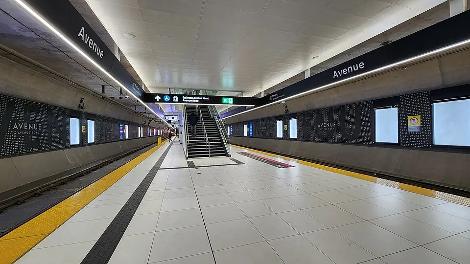

Signal
SignalStation atlas / Avenue
Station history
Avenue


Station history
Metrolinx documented the station cavern under construction 32 metres below the road.
The underground station at Avenue Road was designed with turnback tracks so trains could reverse direction.